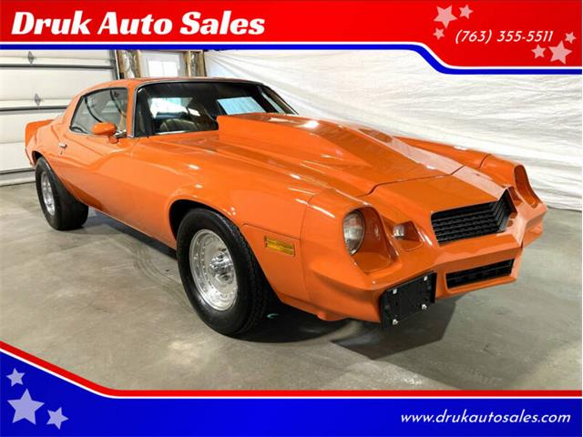
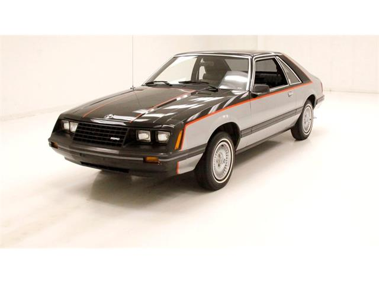
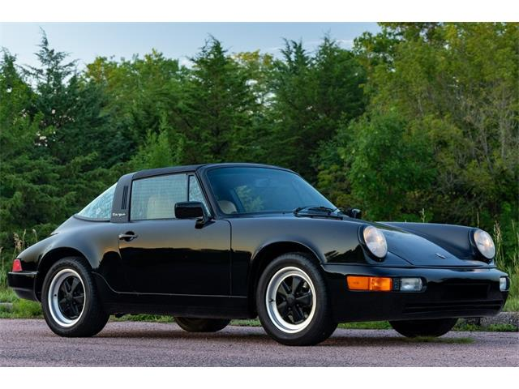
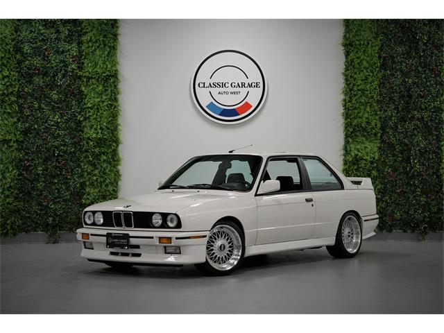
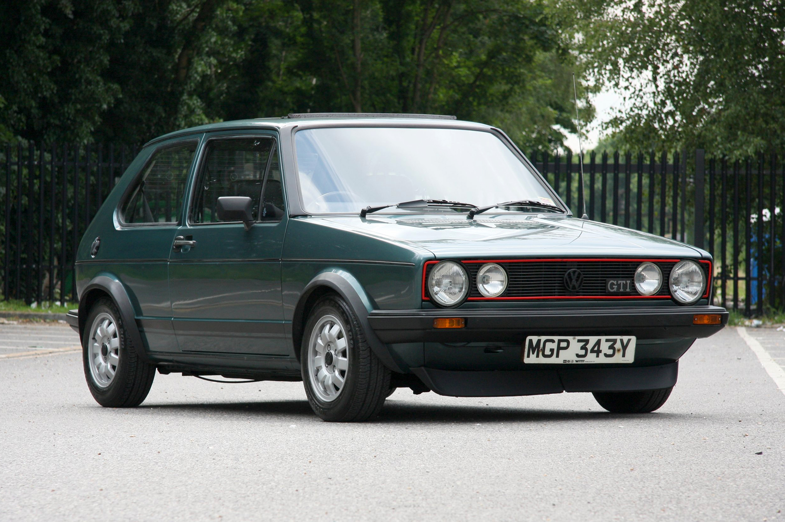
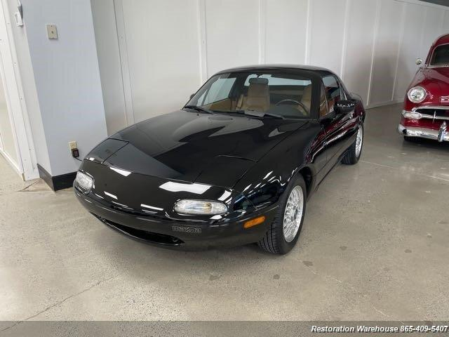
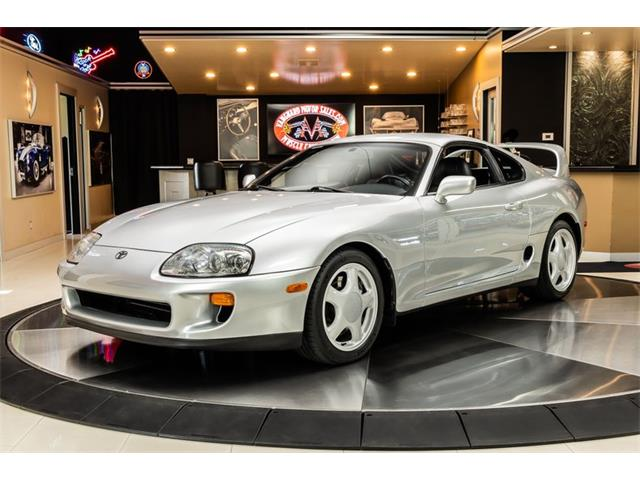
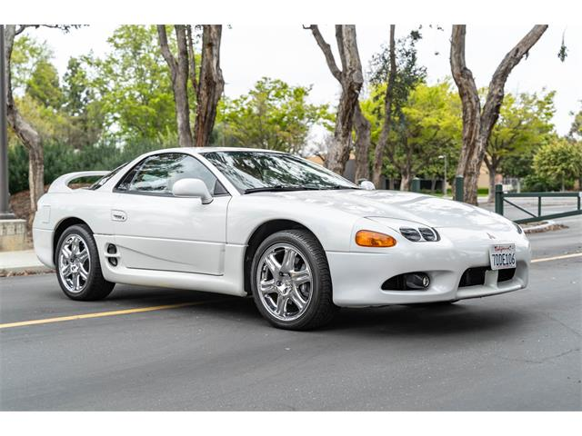
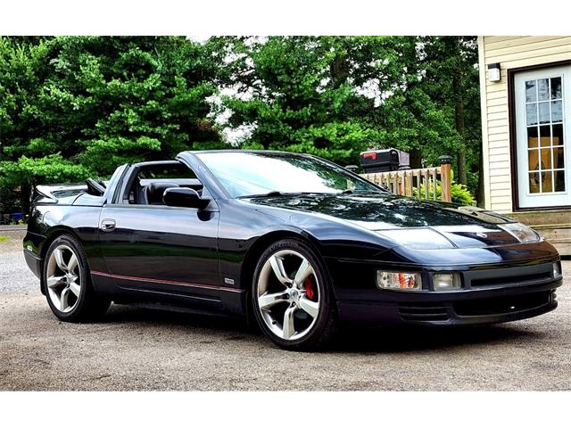
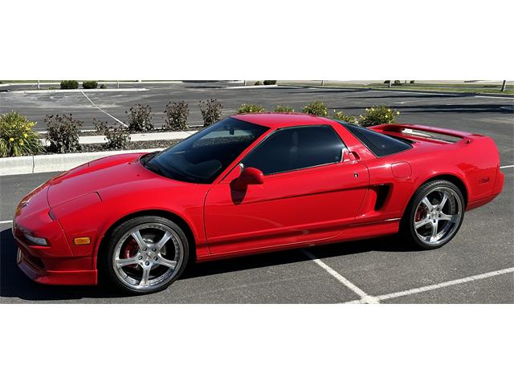

Carros
Bem-vindo a uma viagem emocionante através das décadas de 80 e 90, um período que marcou profundamente a indústria automobilística. Os anos 80 trouxeram inovações tecnológicas e designs ousados, enquanto os anos 90 viram uma fusão única entre estilo retrô e avanços modernos. Neste espaço, exploraremos os carros icônicos que definiram essas décadas, desde os muscle cars e esportivos europeus até os compactos econômicos que conquistaram as ruas. Prepare-se para mergulhar em uma época de potência, elegância e nostalgia automobilística.
Anos 80
Carros clássicos
Chevrolet Camaro (1980)
O Chevrolet Camaro de 1980 é um ícone dos anos 80 que deixou uma forte impressão no mundo automobilístico. Este carro esportivo americano é um exemplo notável de design e desempenho da década de 80. Com seu visual arrojado e motor potente, o Camaro conquistou o coração de entusiastas de carros e continua sendo uma referência para os amantes da velocidade.
O Camaro de 1980 apresentava um design exterior ousado, com linhas esportivas e uma grade frontal distintiva que realçava sua personalidade única. Sob o capô, uma variedade de opções de motores oferecia diferentes níveis de desempenho, garantindo que os motoristas pudessem escolher a potência que melhor se adequava às suas preferências.
Agora, vamos explorar em detalhes o Chevrolet Camaro de 1980, incluindo suas especificações técnicas e algumas curiosidades fascinantes.
Especificações Técnicas:
- Potência: Aproximadamente 190 cavalos
- Torque: Cerca de 285 lb-ft
- Transmissão: Automática de 3 velocidades
- Aceleração 0-60 mph: Em torno de 10 segundos
- Velocidade Máxima: Cerca de 115 mph (185 km/h)
- Sistema de Direção: Direção assistida
- Suspensão: Dianteira independente, traseira de ligação ao eixo
- Freios: Discos na dianteira e tambores na traseira
- Consumo de Combustível (cidade/estrada): Cerca de 12 mpg (cidade) e 18 mpg (estrada)
Curiosidade!
O Camaro de 1980 passou por algumas mudanças de design em relação aos modelos anteriores, apresentando linhas mais retas e uma abordagem estilística mais sóbria. No entanto, ainda manteve sua herança esportiva e continuou a oferecer um emocionante desempenho nas estradas. O Camaro dos anos 80 foi um dos últimos representantes da segunda geração do modelo, marcando o início de uma nova era para esse clássico carro esportivo americano.
Ford Mustang (1980)
O Ford Mustang, uma lenda entre os carros esportivos americanos, continuou a evoluir durante a década de 1980, mantendo seu status de ícone automobilístico. Durante essa época, o Mustang passou por várias mudanças estilísticas e de desempenho, respondendo às demandas em constante mudança dos entusiastas de automóveis e aos regulamentos governamentais mais rigorosos.
Nos anos 1980, o Ford Mustang adotou um estilo mais aerodinâmico e moderno em comparação com a geração anterior. As linhas do carro eram mais suaves e elegantes, e o perfil aerodinâmico contribuiu para melhorar a eficiência do combustível. Os faróis foram redesenhados e a grade frontal ficou mais discreta.
O Mustang dos anos 1980 estava disponível com uma variedade de opções de motores, incluindo motores de quatro cilindros e V6. No entanto, os motores V8 continuaram a ser uma escolha popular para aqueles que buscavam um desempenho mais vigoroso. O desempenho do Mustang melhorou significativamente ao longo da década, apesar dos desafios de conformidade com os padrões de emissões.
Durante a década de 1980, o Mustang viu o lançamento de várias edições especiais memoráveis, como o Mustang GT, que trouxe um foco renovado no desempenho. Outros modelos, como o Mustang SVO (Special Vehicle Operations), impressionaram com inovações tecnológicas e desempenho esportivo.
Em 1987, o Ford Mustang passou por uma reformulação significativa, com a introdução do modelo "Fox-Body" que apresentava uma carroceria mais leve e aerodinâmica. Este redesign revitalizou o interesse pelo Mustang e solidificou sua posição como um carro esportivo icônico.
No geral, o Ford Mustang dos anos 1980 desempenhou um papel importante na história da marca e continuou a atrair entusiastas de automóveis com seu estilo distinto e desempenho emocionante.
Especificações Técnicas:
- Potência: Varia dependendo da versão e do ano específico, com motores de quatro cilindros, V6 e V8, com potências que vão de aproximadamente 88 a 225 cavalos.
- Torque: O torque também varia com base na configuração do motor, com números que vão de cerca de 132 lb-ft a 300 lb-ft.
- Transmissão: Disponível com transmissões manuais de 4 ou 5 velocidades e automáticas de 3 ou 4 velocidades, dependendo da versão.
- Aceleração 0-60 mph: O tempo de aceleração de 0 a 60 mph depende do modelo específico e do motor, variando de cerca de 7 a 10 segundos.
- Velocidade Máxima: A velocidade máxima também varia, com estimativas que vão de aproximadamente 110 mph a 140 mph.
- Sistema de Direção: Direção assistida disponível em algumas versões.
- Suspensão: Suspensão dianteira independente com molas helicoidais e suspensão traseira de eixo rígido com molas helicoidais.
- Freios: Freios a disco na dianteira e freios a tambor na traseira, embora algumas versões tenham discos nas quatro rodas.
- Consumo de Combustível (cidade/estrada): O consumo de combustível pode variar amplamente, mas uma estimativa geral seria em torno de 15-25 mpg na cidade e 20-30 mpg na estrada, dependendo da configuração do motor.
Curiosidade!
O Ford Mustang foi apresentado ao público pela primeira vez em 17 de abril de 1964, durante a Feira Mundial de Nova York. Ele foi um dos lançamentos de carros mais bem-sucedidos da história, com uma recepção entusiasmada que levou a longas filas nas concessionárias. O Mustang rapidamente se tornou um ícone da cultura automotiva americana e continua sendo um dos carros esportivos mais reconhecíveis do mundo.
Porsche 911 (1980)
O Porsche 911 é uma lenda entre os carros esportivos, e sua presença nas estradas das décadas de 80 foi marcante. Este ícone alemão combinou desempenho emocionante com um design atemporal que ainda é admirado até os dias de hoje. Vamos explorar algumas informações fascinantes sobre este carro icônico dos anos 80.
Especificações Técnicas:
- Potência: 230 cavalos
- Torque: 245 lb-ft
- Transmissão: Manual de 5 velocidades
- Aceleração 0-60 mph: 6,3 segundos
- Velocidade Máxima: 152 mph
- Sistema de Direção: Direção assistida
- Suspensão: Suspensão independente nas quatro rodas
- Freios: Freios a disco nas quatro rodas
- Consumo de Combustível (cidade/estrada): 15 mpg na cidade / 21 mpg na estrada
Curiosidade!
Você sabia que o Porsche 911 foi originalmente concebido como um sucessor para o Porsche 356, que era o modelo anterior da Porsche? No entanto, os designers e engenheiros da Porsche decidiram manter o nome "911" após o lançamento, e ele se tornou um dos nomes mais icônicos e reconhecíveis da indústria automobilística. Desde então, o Porsche 911 passou por várias gerações e continua sendo um dos carros esportivos mais desejados do mundo.
BMW M3 E30
O BMW M3 E30 é um ícone incontestável dos anos 80, conhecido por sua fusão excepcional de desempenho e estilo. Este carro esportivo alemão deixou uma marca indelével na história automobilística, cativando entusiastas de carros em todo o mundo. Com sua silhueta elegante e habilidades de direção emocionantes, o BMW M3 E30 personifica a busca implacável por precisão e potência que caracterizou a década de 1980. Vamos explorar mais sobre esse clássico automobilístico que ainda continua a atrair admiradores.
Especificações Técnicas:
- Potência: 192 cavalos de potência.
- Torque: 177 lb-ft (240 Nm) de torque.
- Transmissão: Manual de 5 velocidades.
- Aceleração 0-60 mph: Aproximadamente 6,9 segundos.
- Velocidade Máxima: Cerca de 143 mph (230 km/h).
- Sistema de Direção: Direção assistida.
- Suspensão: Suspensão dianteira McPherson e suspensão traseira independente.
- Freios: Freios a disco nas quatro rodas.
- Consumo de Combustível (cidade/estrada): Varia de acordo com as condições de condução, mas em média, cerca de 18 mpg na cidade e 25 mpg na estrada.
Curiosidade!
O BMW M3 E30 foi inicialmente concebido para competir no Campeonato Mundial de Carros de Turismo (WTCC). A versão de rua foi criada para cumprir os requisitos de homologação da FIA (Federação Internacional do Automóvel) e, como resultado, os entusiastas de automóveis tiveram a oportunidade de possuir uma versão do carro que era surpreendentemente próxima daquelas usadas em competições de alto nível. O sucesso do BMW M3 E30 nas pistas de corrida ajudou a solidificar sua reputação como um dos carros esportivos mais icônicos dos anos 80.
Volkswagen Golf GTI Mk1
O Volkswagen Golf GTI Mk1 é um ícone entre os carros esportivos compactos dos anos 80. Lançado em 1976 e produzido até 1984, ele estabeleceu um novo padrão para carros esportivos acessíveis. Seu design discreto escondia um desempenho impressionante, tornando-o muito popular entre os entusiastas de automóveis. Vamos dar uma olhada nas especificações e em uma curiosidade sobre este clássico.
Especificações Técnicas:
- Potência: 108 cavalos de potência.
- Torque: 137 Nm.
- Transmissão: Manual de 4 velocidades.
- Aceleração 0-60 mph: Aproximadamente 9 segundos.
- Velocidade Máxima: Cerca de 180 km/h.
- Sistema de Direção: Direção assistida.
- Suspensão: Suspensão dianteira independente e suspensão traseira semi-independente.
- Freios: Freios a disco na frente e freios a tambor na traseira.
- Consumo de Combustível (cidade/estrada): Cerca de 10 km/l na cidade e 14 km/l na estrada.
Curiosidade!
O nome "GTI" representa "Grand Touring Injection" e foi usado pela primeira vez no Volkswagen Golf. A injeção de combustível eletrônica Bosch K-Jetronic melhorou a eficiência do motor e o desempenho, tornando-o um dos primeiros hot hatches do mundo. O Golf GTI Mk1 é frequentemente considerado o ponto de partida para toda a linha GTI da Volkswagen, que se tornou sinônimo de carros esportivos compactos e acessíveis.
Anos 90
Carros Clássicos
Mazda MX-5 (Miata)
O Mazda MX-5, conhecido como Miata nos Estados Unidos, é um veículo que marcou os anos 90 com seu design clássico de roadster. Ele é admirado por sua simplicidade, dirigibilidade esportiva e estilo atemporal. Este carro foi projetado para oferecer uma experiência de condução pura e divertida.
Especificações Técnicas:
- Potência: A potência do Mazda MX-5 varia dependendo do ano e da versão, mas geralmente gira em torno de 130 a 160 cavalos.
- Torque: O torque também varia com o motor, com números em torno de 110 lb-ft a 140 lb-ft.
- Transmissão: Pode ser encontrada com transmissão manual ou automática, dependendo do modelo.
- Aceleração 0-60 mph: A aceleração de 0 a 60 mph é relativamente rápida, levando cerca de 7 a 9 segundos, dependendo da versão.
- Velocidade Máxima: A velocidade máxima do MX-5 geralmente atinge cerca de 120 a 130 mph (193 a 209 km/h).
- Sistema de Direção: Possui direção assistida para uma condução ágil.
- Suspensão: Sua suspensão é ajustada para proporcionar uma experiência de direção esportiva e precisa.
- Freios: Possui freios a disco nas quatro rodas para uma frenagem eficaz.
- Consumo de Combustível (cidade/estrada): O consumo de combustível pode variar, mas geralmente é eficiente, com uma média de 25 a 30 mpg (milhas por galão) na estrada.
Curiosidade!
O Mazda MX-5 entrou para o Livro dos Recordes Guinness como o roadster mais vendido do mundo. Sua popularidade contínua entre entusiastas de carros é um testemunho de seu apelo duradouro.
Toyota Supra
O Toyota Supra é um ícone da indústria automobilística, conhecido por seu desempenho excepcional e design esportivo. Fabricado entre 1993 e 2002, o Supra conquistou o coração dos entusiastas de carros esportivos e se tornou um dos mais desejados carros japoneses dos anos 90.
Especificações Técnicas:
- Potência: O Toyota Supra estava disponível em várias versões, com potências que variavam de cerca de 220 cavalos até mais de 320 cavalos nas versões mais potentes.
- Torque: O torque também variava com o motor, com números impressionantes que proporcionavam aceleração rápida.
- Transmissão: Geralmente equipado com uma transmissão manual de 6 velocidades ou uma automática de 4 velocidades.
- Aceleração 0-60 mph: As versões mais potentes podiam acelerar de 0 a 60 mph em menos de 5 segundos.
- Velocidade Máxima: O Supra atingia velocidades máximas superiores a 170 mph (273 km/h) nas versões mais potentes.
- Sistema de Direção: Possuía direção precisa e responsiva para uma experiência de condução esportiva.
- Suspensão: A suspensão esportiva garantia excelente aderência em curvas.
- Freios: Equipado com freios a disco nas quatro rodas para uma frenagem eficaz.
- Consumo de Combustível (cidade/estrada): Como um carro esportivo, o consumo de combustível não era seu ponto forte, com médias variando de 15 a 25 mpg.
Curiosidade!
O Toyota Supra ganhou destaque em filmes e jogos de vídeo, como o famoso filme "Velozes e Furiosos." Sua popularidade e status de ícone continuam atraindo entusiastas até os dias de hoje.
Mitsubishi 3000GT
O Mitsubishi 3000GT, também conhecido como Dodge Stealth nos Estados Unidos, é um carro esportivo que marcou a década de 90 com seu design arrojado e tecnologia inovadora. Este carro ofereceu um equilíbrio notável entre desempenho, estilo e conforto.
Especificações Técnicas:
- Potência: O 3000GT estava disponível em várias versões, com potências que variavam de cerca de 220 cavalos até mais de 320 cavalos nas versões mais potentes.
- Torque: Oferecia um torque sólido, especialmente nas versões mais potentes.
- Transmissão: Geralmente equipado com uma transmissão manual de 5 ou 6 velocidades ou uma automática de 4 velocidades.
- Aceleração 0-60 mph: As versões mais potentes podiam acelerar de 0 a 60 mph em menos de 5 segundos.
- Velocidade Máxima: O 3000GT alcançava velocidades máximas superiores a 155 mph (250 km/h) nas versões mais potentes.
- Sistema de Direção: Possuía direção precisa e uma suspensão esportiva ajustável.
- Suspensão: A suspensão ativa era uma característica marcante, permitindo ajustes para diferentes condições de direção.
- Freios: Equipado com freios a disco nas quatro rodas e sistemas avançados de controle de tração.
- Consumo de Combustível (cidade/estrada): Como muitos carros esportivos, o consumo variava de acordo com a versão, mas normalmente não era seu ponto forte.
Curiosidade!
O Mitsubishi 3000GT era conhecido por sua tecnologia avançada, incluindo a tração nas quatro rodas, direção nas quatro rodas e até mesmo um sistema de escape ajustável que alterava o som do motor com o toque de um botão.
Nissan 300ZX
O Nissan 300ZX é um exemplo notável de um carro esportivo japonês que se destacou nos anos 90. Com seu design elegante e desempenho emocionante, o 300ZX cativou entusiastas de automóveis em todo o mundo.
Especificações Técnicas:
- Potência: O 300ZX estava disponível em várias versões, com potências que variavam de cerca de 220 cavalos até mais de 300 cavalos nas versões Twin Turbo.
- Torque: Oferecia um torque sólido, especialmente nas versões com motor Twin Turbo.
- Transmissão: Geralmente equipado com uma transmissão manual de 5 velocidades ou uma automática de 4 velocidades.
- Aceleração 0-60 mph: As versões Twin Turbo podiam acelerar de 0 a 60 mph em menos de 5 segundos.
- Velocidade Máxima: O 300ZX alcançava velocidades máximas superiores a 155 mph (250 km/h) nas versões mais potentes.
- Sistema de Direção: Possuía uma direção precisa e uma suspensão bem equilibrada.
- Suspensão: A suspensão esportiva proporcionava uma ótima dirigibilidade em curvas.
- Freios: Equipado com freios a disco nas quatro rodas para uma frenagem eficaz.
- Consumo de Combustível (cidade/estrada): Como a maioria dos carros esportivos, o consumo variava de acordo com a versão, sendo menos eficiente nas versões mais potentes.
Curiosidade!
O Nissan 300ZX era conhecido por seu sistema de direção nas quatro rodas, que melhorava a estabilidade e a agilidade do carro, tornando-o ainda mais divertido de dirigir.
Acura NSX
O Acura NSX, também conhecido como Honda NSX fora dos Estados Unidos, é um carro esportivo que se destacou nos anos 90 por sua impressionante combinação de desempenho, design e tecnologia. Foi um dos primeiros supercarros a oferecer uma experiência de direção emocionante com um foco especial na confiabilidade e praticidade, características que o tornaram um sucesso instantâneo entre entusiastas automotivos e amantes de velocidade. Com sua origem japonesa, o NSX marcou a entrada da Honda no mercado de supercarros e desempenhou um papel importante na redefinição dos padrões de qualidade e desempenho na indústria automobilística. Vamos explorar mais detalhadamente as características e especificações deste lendário carro dos anos 90.
Especificações Técnicas:
- Potência: Aproximadamente 270 cavalos de potência.
- Torque: Cerca de 210 lb-ft (libra-pé) de torque.
- Transmissão: Transmissão manual de 6 velocidades ou automática de 4 velocidades.
- Aceleração 0-60 mph: Aproximadamente 5 segundos.
- Velocidade Máxima: Mais de 160 mph (260 km/h).
- Sistema de Direção: Direção assistida eletronicamente.
- Suspensão: Suspensão independente nas quatro rodas.
- Freios: Freios a disco nas quatro rodas com ABS.
- Consumo de Combustível (cidade/estrada): Cerca de 18 mpg (milhas por galão) na cidade e 24 mpg na estrada.
Curiosidade!
O Acura NSX dos anos 90 foi um dos primeiros carros esportivos a apresentar uma carroceria de alumínio, tornando-o mais leve e ágil. Além disso, o lendário piloto de Fórmula 1, Ayrton Senna, desempenhou um papel fundamental no desenvolvimento do NSX. Senna forneceu feedback valioso à equipe de engenharia da Honda durante o processo de ajuste fino, ajudando a aprimorar a dirigibilidade e o desempenho do carro. Sua contribuição tornou o NSX um dos carros esportivos mais icônicos e respeitados da década de 1990.
